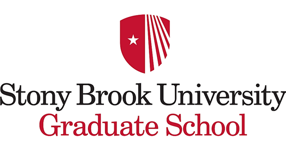

Stony Brook Graduate School - Syllabi generator

Course name:
Course code:
Course description:
This course is an introduction to the field of pharmacology. Principles of Pharmacology I (HBH 631) is divided into two major sections. In the first, attention is given to the basic principles related to the administration, distribution, metabolism, and excretion (ADME) of drugs. In addition, the basic principles of drug receptors, drug design, and pharmacogenetics are discussed. The second section of the course is devoted to the topics of neuropharmacology and anesthesia.
Student Learning Objectives:
Students will be able to identify landmark historical events in the development of pharmacology as a scientific discipline; Compare and contrast herbal supplements and FDA approved medicinal agents; Discuss the placebo effect using specific examples; Explain the differences between the various phases of clinical drug trials; Describe the various routes of drug administration and their respective advantages and disadvantages; Discuss the absorption of acids and bases from the GI tract and provide specific examples illustrating the clinical significance in situations of drug overdose; Describe volume of distribution (Vd) in both mathematical and conceptual terms; Describe the major endogenous receptors that function as drug targets and discuss their role in eliciting drug responses;
Student Accessibility Support Servicese:
If you have a physical, psychological, medical or learning disability that may impact your course work, please contact Student Accessibility Support Services (SASC) (formerly Disability Support Services, DSS), ECC (Educational Communications Center) Building, room 128, (631) 632-6748. They will determine with you what accommodations are necessary and appropriate. All information and documentation is confidential. Students who require assistance during emergency evacuation are encouraged to discuss their needs with their professors and Student Accessibility Support Services (SASC) (formerly Disability Support Services, DSS). For procedures and information go to the following website: http://www.stonybrook.edu/ehs/fire/disabilities
Academic Integrity:
Each student must pursue his or her academic goals honestly and be personally accountable for all submitted work. Representing another person's work as your own is always wrong. Faculty are required to report any suspected instances of academic dishonesty to the Academic Judiciary. For more comprehensive information on academic integrity, including categories of academic dishonesty, please refer to the academic judiciary website at: http://www.stonybrook.edu/uaa/academicjudiciary/
Critical Incident Management:
Stony Brook University expects students to maintain standards of personal integrity that are in harmony with the educational goals of the institution; to observe national, state, and local laws and University regulations; and to respect the rights, privileges, and property of other people. Faculty are required to report to the Office of Judicial Affairs any disruptive behavior that interrupts their ability to teach, compromises the safety of the learning environment, and/or inhibits students' ability to learn.
Click to generate document